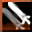
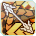
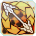
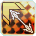
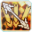
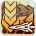
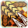
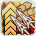

Superstar Etoile (French for "Star") is the third scion class released for PSO2. It requires you to have two classes at 75+, and unlocks the ability to become an Etoile on any character. Like Phantom, it cannot take a subclass but it can be used as a subclass. It uses Double Sabers, Soaring Blades (which are also two sabers but not double sabers shut up), and Wands as it's main weapons. It floats for most of it's actions, can summon golden swords from Gate of Babylon, uses focus in super interesting and new ways, and adds gold effects to most actions (dress accordingly!). Please keep in mind that, unlike Hero, you don't need to swap weapons to build a gauge. You can stick with one weapon if you want.
You can think of Etoile as a floaty DPS/Support mix. Similar to Hero and Phantom, Etoile uses existing weapons in different ways, as seen below:
Double Saber: Make all the fighters jealous with your new moves! The Double Saber in etoile is very floaty and chill. It does basic attacks like you'd expect a Double Saber to do. Hitting the Weapon Action button uses "Deflect" which, as you guessed it, can be used to deflect enemy attacks. You can also hit the Weapon Action button again after deflecting to perform a counterattack which can stun enemies. Doubletapping the dodge button will allow you to float in a certain direction as long as you desire. All Double Saber photon arts have two (2) parts to them. The first part can be skipped (after getting the Double Saber Skip Arts skill from the skill tree) by not pressing any direction when using them.
Soaring Blades: Bouncers, you can finally ditch those boots! Unlike Double Saber's chill, the Soaring Blades seem to emphasive hitting hard, even shaking your screen a bit in the normal combo. Hitting the Weapon Action button will perform a Parry, blocking damage from all directions. If you are in the middle of a Photon Art (or literally anything else), it will block the damage without interrupting the action. Neat! You can also dodge and press the weapon action to throw a pair of sabers that can pierce and restore some PP.
Wand: Defy the laws of physics repeatedly by doing normal attacks and spinning around while you do. When you use a Photon Art with the Wand, a white circle will appear during it. Tapping the Weapon Action button while that white circle is showing will change the Photon Art into a Focused Photon Art, doing more damage but changing other properties (typically less AOE or duration). Hitting the Weapon Action by itself actives the Neo bullet stop move from the first matrix, Charge Protect. You hold your hand out and say "no" and the damage cannot hit you without your consent. Holding down the Weapon Action will release a shot that homes in on the enemy.
Each weapon Etoile uses (when you activate it's focus skill on the skill tree) has a focus gauge that builds as you do damage. Once you build it to certain levels (different for each weapon), you can do some pretty interesting stuff.
Double Saber
Whenever you get hit while using a Double Saber and have enough focus gauge to cover it, the hit will do 30% less damage (and take away the appropriate amount of gauge). You can also consume the focus gauge (when you have enough) to do an Enhanced Attack by holding down the normal attack button. You should always do this when you have it.
Soaring Blades
When you fill up half or the complete focus gauge, you can use the Connect attacks. Dodging, then hitting the weapon action button twice (Dodge -> WA -> WA) will do a Connect Attack and use half the gauge. If you have half a gauge remaining after this, you can press the Weapon Action button again (or hold it) to perform a Full Connect Attack.
Wand
You can hold down the Weapon Action button to maintain your shield longer, at the expense of the focus gauge. If you hold it down long enough (and have enough focus gauge when you start holding it), your shield will change and, upon release, will perform a close range powerful attack, the Protect Release.
Double Saber (Stationary Single Target)
If you are not near the enemy (Dash-in Combo):
Absolute Quasar (Part 1) -> Saber Destruction (Part 2) -> Normal -> Normal combo
If you are near the enemy (Normal Combo):
Absolute Quasar (Part 2) -> Saber Destruction (Part 2) -> Normal -> Repeat
This is your "boss that loves to stand still" combo. Feel free to weave in Enhanced Attacks when you can.
Double Saber (Mobile Single Target)
Absolute Quasar (Part 2)/Celestial Collide -> Shooting Star x 3 -> Normal Attack (This will do the third part of the normal attack) -> Repeat
Useful for bosses that don't stand still.
Soaring Blades (Stationary Single Target)
Radiant Sting -> Distortion Pierce -> Normal Attack (This will do the third part of the normal attack) -> Distortion Pierce x2 -> Normal Attack -> Repeat
This is your "boss that loves to stand still" combo.
Soaring Blades (Mobile Single Target)
Vertical Flow -> Light Wave -> Normal Attack (This will do the third part of the normal attack) -> Light Wave x2 -> Normal Attack -> Repeat
Useful for bosses that don't stand still.
Wand (Stationary Single Target)
Black Hole Rapture (if they'll be inside it for 4+ seconds)/Prism Circular -> Luminous Flare -> Normal Attack (This will do the third part of the normal attack) -> Luminous Flare x2 -> Normal Attack -> Repeat
This is your "boss that loves to stand still" combo.
Wand (Mobile Single Target)
Prism Circular -> Luminous Flare -> Normal Attack (This will do the third part of the normal attack) -> Luminous Flare x2 -> Normal Attack -> Repeat
Useful for bosses that don't stand still.
Single Target/Bosses
For bosses, you generally want to prioritize using Focused Wand PAs unless the boss moves around a lot and you can't follow them without expending a lot of PP that you don't have. Wand has some advantages for bossing over other weapons, such as guard frames that can refund tons of PP. Wand also does the highest DPS by far due to Focused Luminous Flare spam. It also has a definite advantage in mobility - A lot of gear gain comes from moving with it, not just attacking.
Mobbing
Double Saber: Saber Destruction (Part 1) -> (Stay Arts) Absolute Quasar -> Normal 3
Soaring Blades: Distortion Pierce/Radiant Sting
Wand: Black Hole Rapture is amazing for mobbing. Follow it up with another PA or Wand Protect (Hold Weapon Action and use focus gauge). You can also use Luminous Flare.
Skill Tree/Skills
A typical Etoile skill tree can be found by checking the PSO2NA Class Builds Compilation. Remember that percentage multipliers are always better than straight additions, so a 5% increase to something will almost always be better than doing +5 to it.
Rings
Left Rings
- Easy Full Connect: This ring lets you precharge the full connect combo, which can be ideal if a boss becomes invulnerable.
- Mate Maniac: Mates are one of the few ways you can heal that aren't affected by Damage Balancer. !Definitely recommended!
- Atomizer Fanatic: Speeds up the consumption animation of Moon/Sol/Star Atomizers and increases their recovery rate.
- Party Toughness: Reduces damage taken based on the number of players in your Party. Does nothing if you're solo.
 Leaping Dodge: Gives you a active skill that lets you jump super high.
Leaping Dodge: Gives you a active skill that lets you jump super high.
- Mag Excitement: Increases the power of your Mag's Auto Action and reduces its cooldown.
You can slot 3 of these into units, then just wear the last one as a normal ring.
Right Rings
 Critical Strike (Combo Ring): Increases your crit power for all 3 attack stats by 3% and your crit rate for all 3 stats by 20% (at level 20)
Critical Strike (Combo Ring): Increases your crit power for all 3 attack stats by 3% and your crit rate for all 3 stats by 20% (at level 20)
Mag
Your Mag's total attack stats (Melee, Range, and Tech) are added up and then distributed evenly to all three stats - So it doesn't matter which kind of attack mag you're using (as long as it has all it's points in attack!).
Movement skills
Like other classes, Etoile has some skills that people can use to move rapidly as opposed to just running. Gotta go fast!
- Absolute Quasar (Part 1) (Double Saber PA)
- Radiant Sting (Soaring Blades PA)
- Prism Circular (Wand)
- airoh. for letting me steal their layout for the initial version of this guide
- Advisors on Phantasy Star Fleet for advice/information
- Bad Intentions/Brand New Star for teaching me how to be a pro Etoile and do starry things
- Arks Visiphone for icons and data
- Cast maids everywhere - Bless you!
November 21st (Almost 22nd), 2020
Turns out I was already at the end of Spiderman! Updated the guide with some fixes/formatting/re-arranging. On to Luster!
November 21st (Almost 22nd), 2020
All done! Guide is now public. Now I'm gonna go finish Spiderman PS4 before EP6 drops. Christ.
November 21st, 2020
Remember when we had time for things besides PSO2NA? Rushed content is a real b*@!$.